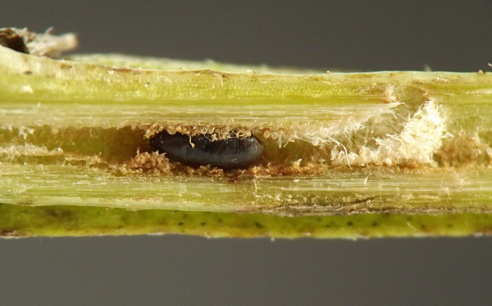
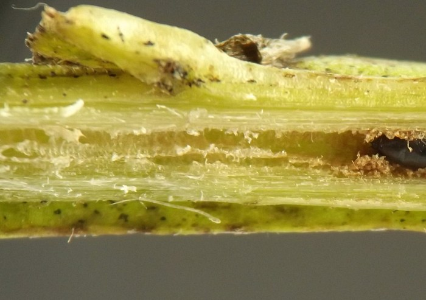
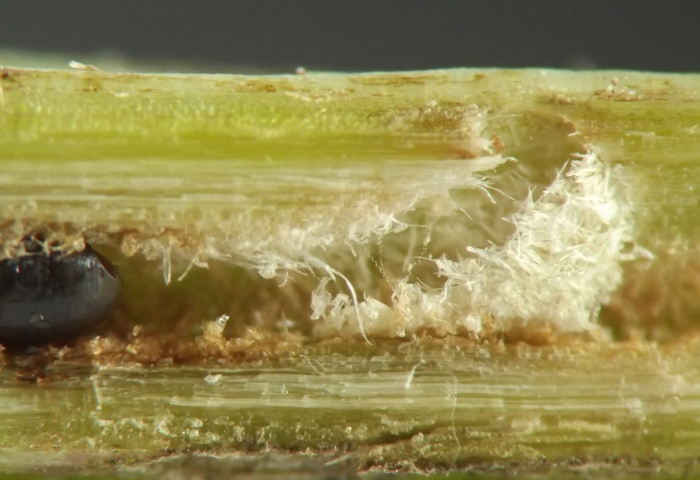
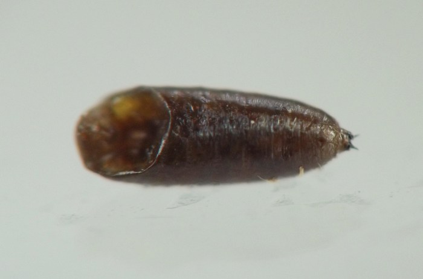
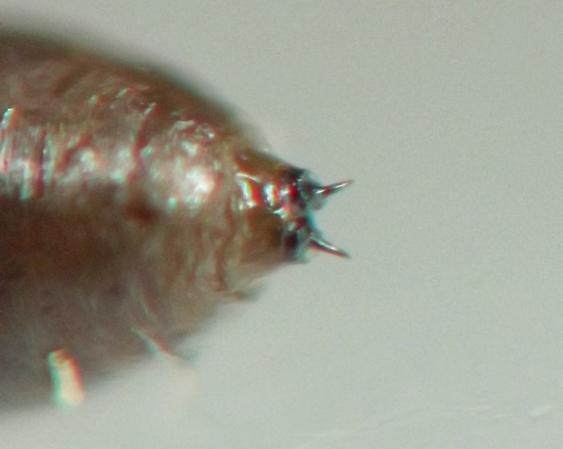
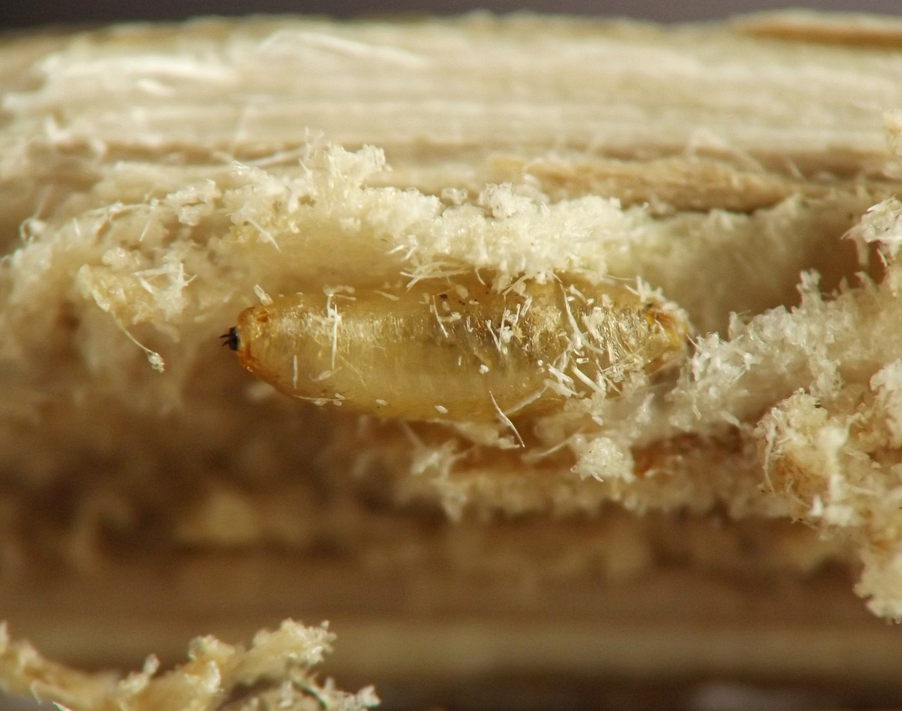
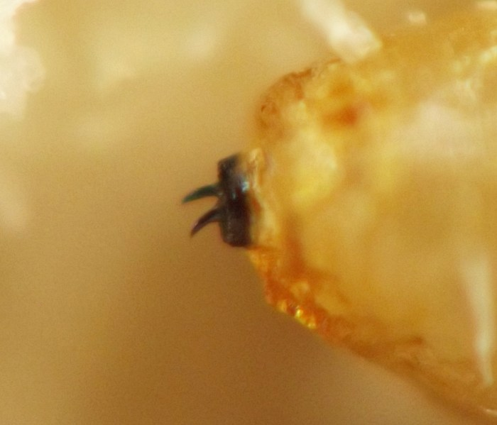

Stem borer (Diptera: Agromyzidae) in Helenium
| Record no.: | 0261 |
|---|---|
| Feeding guild: | Stem borer |
| Taxonomy: | Diptera: Agromyzidae |
| Stages observed: | trace, puparium |
| Distribution observed: | IA |
| Hosts in Helenium: | H. autumnale (sneezeweed) |
I encountered puparia in tunnels in stems of the host in October and January. In the October instance, the larva had prepared a short, arching exit tunnel composed partly of shreddings and leading from the pupation location in the pith to a small oblong exit hole in the outer wall of the stem, which was covered by a thin operculum of stem epidermis.
In both the October and the January examples, the posterior spiracular plates of the puparium were black in color, separated by less than half their width (almost touching in the October example), and ornamented with strong, curved black horns.

 Prev
Prev
{kind=link}
{kind=link}

{kind=link}

{kind=link}

{kind=link}


{kind=link}

{kind=link}

Page created: April 3, 2026. Last update: none